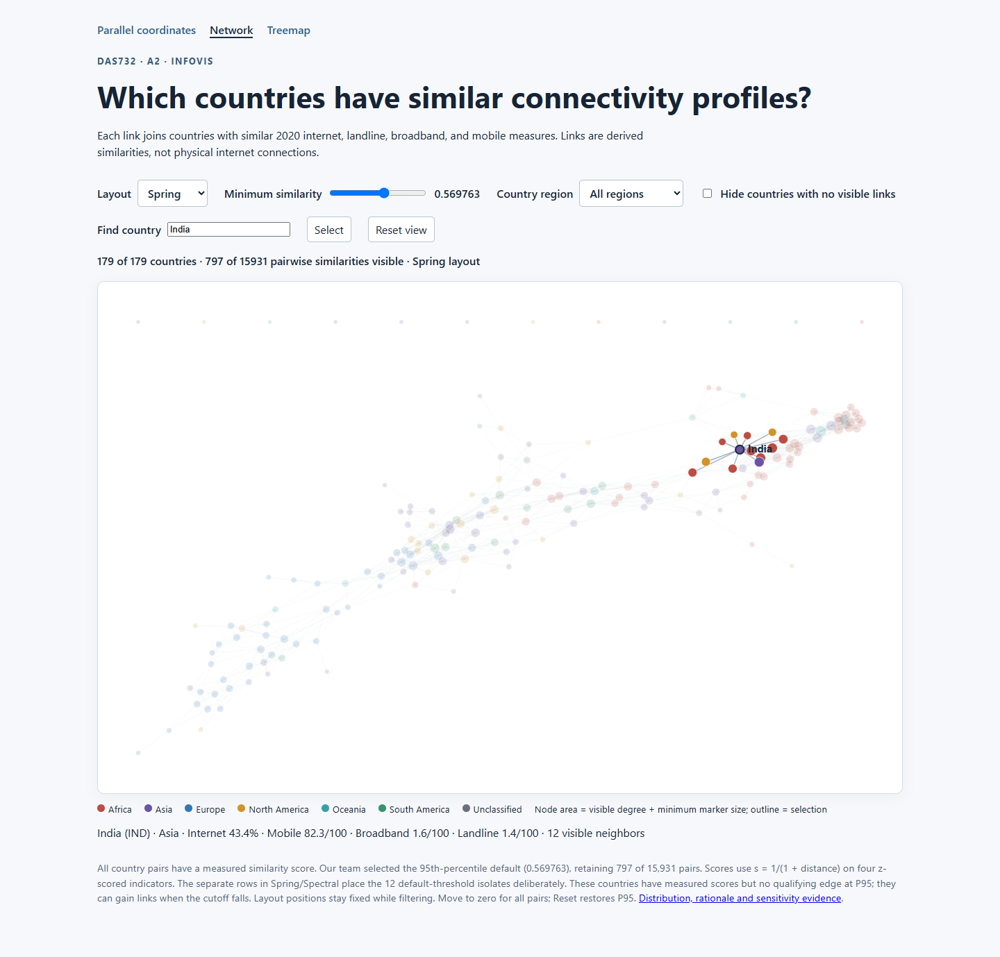
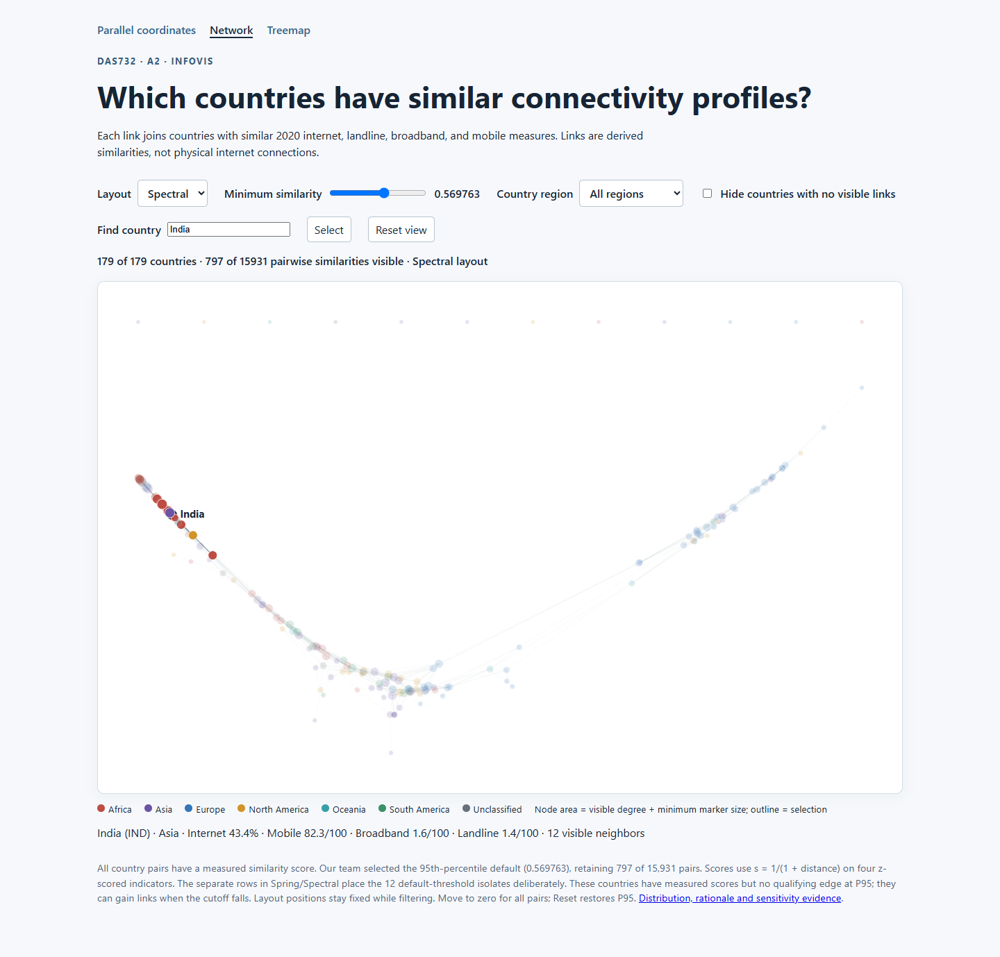
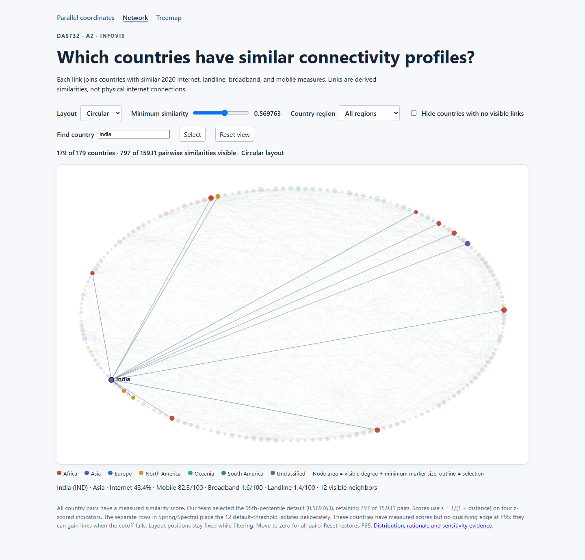
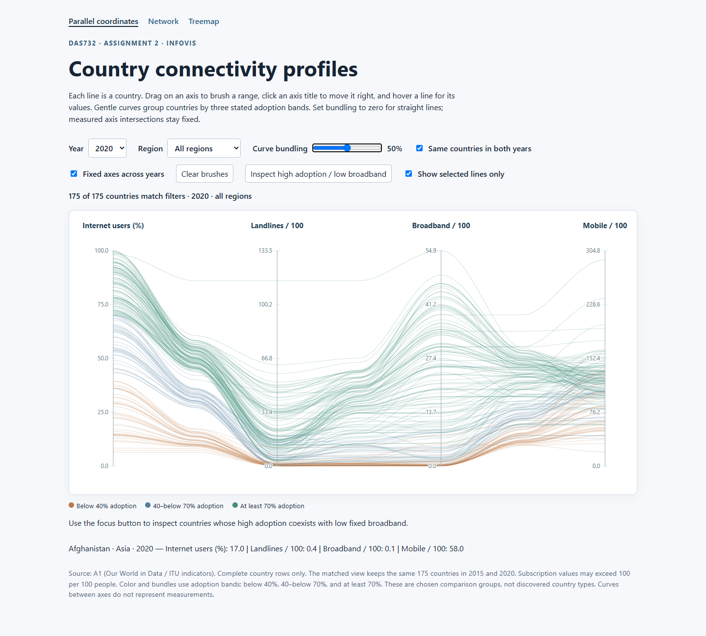
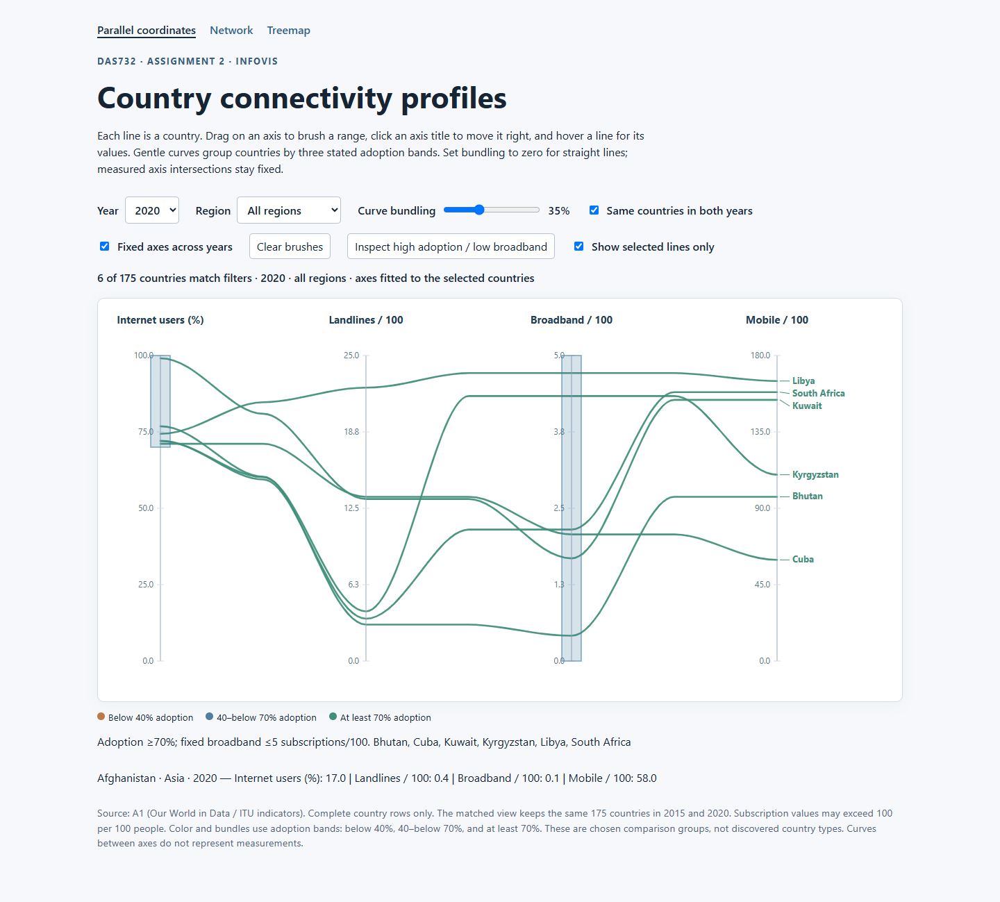
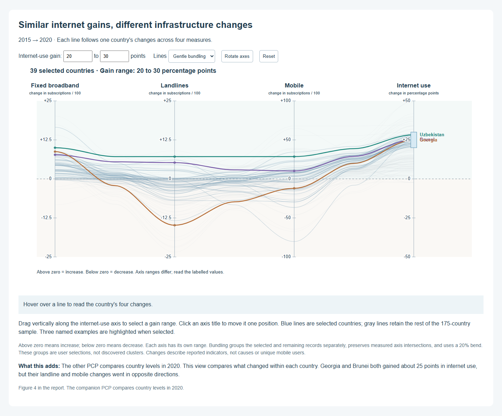
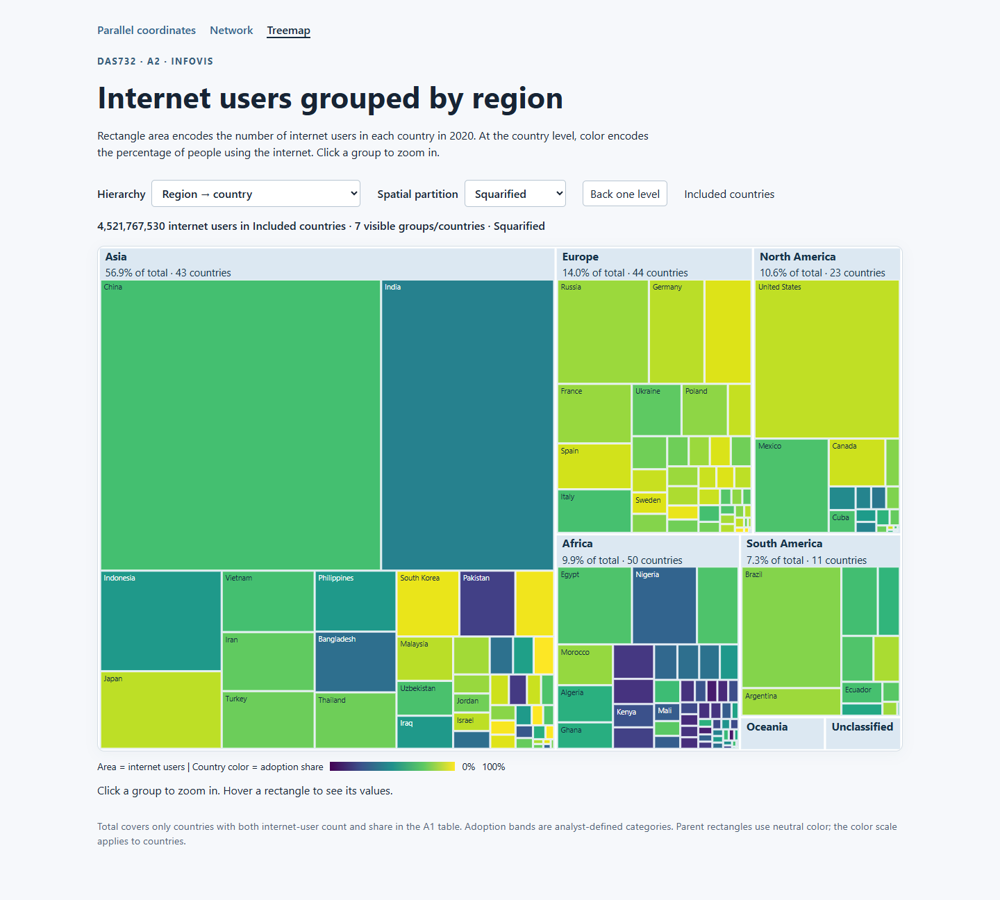
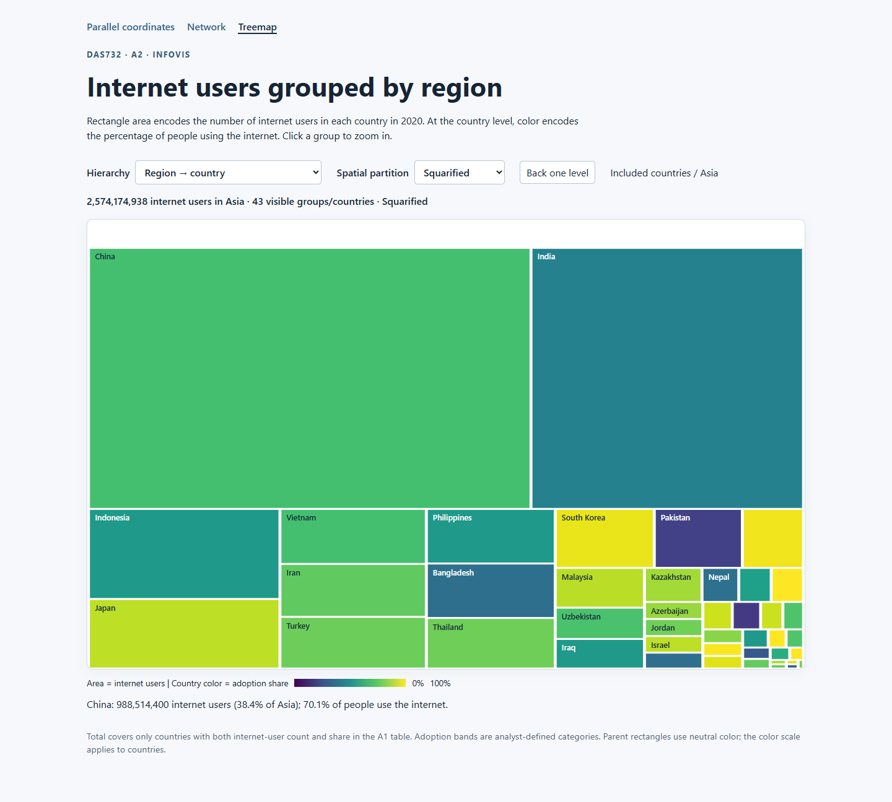
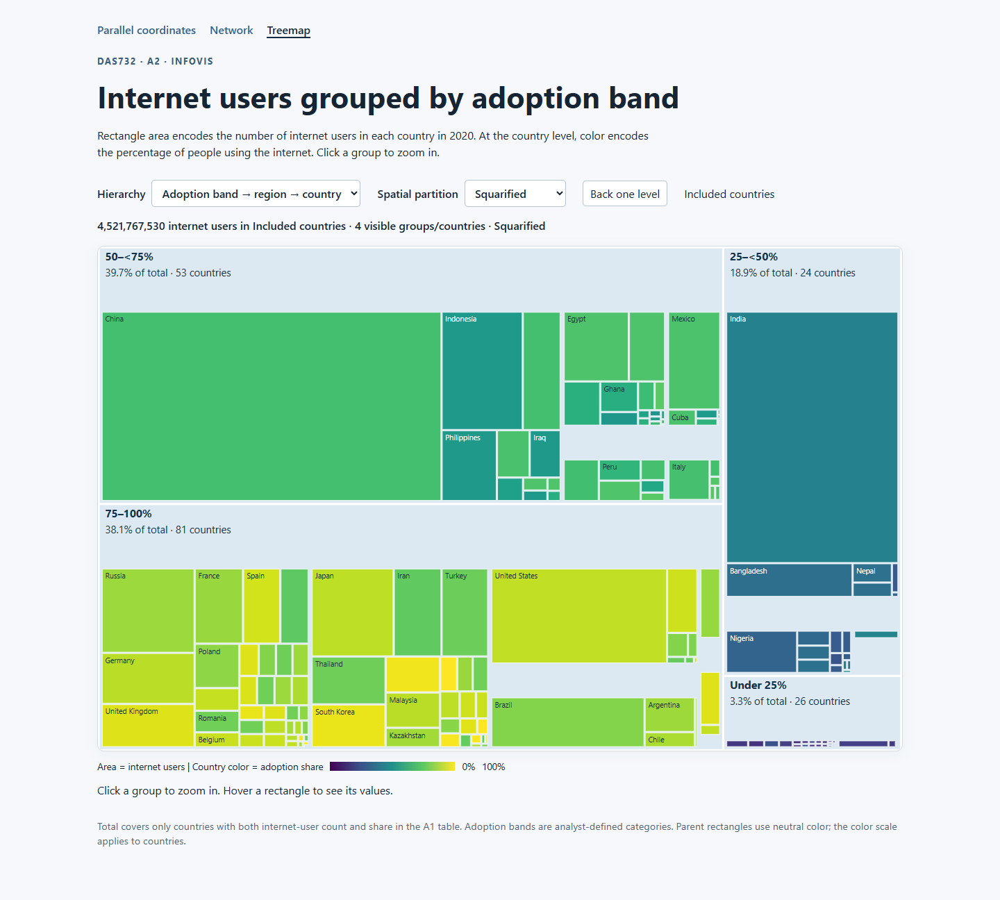
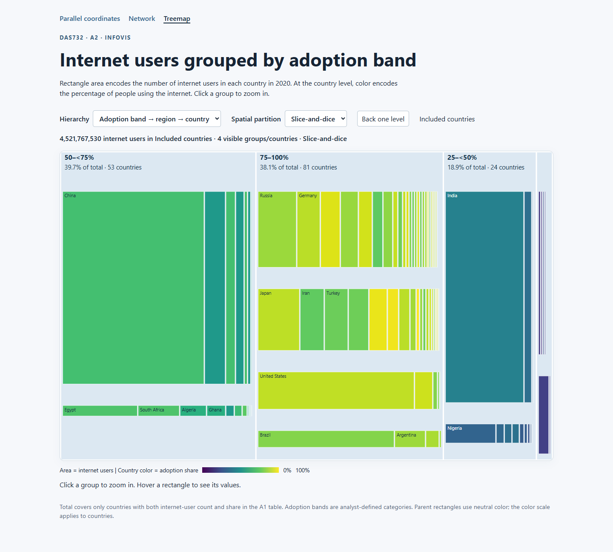

Network: complete controls and Spring layout

Uncropped full-page captures. Controls were tested through the browser; the machine-readable receipt is output/infovis_audit_20261026/interactions.json.









